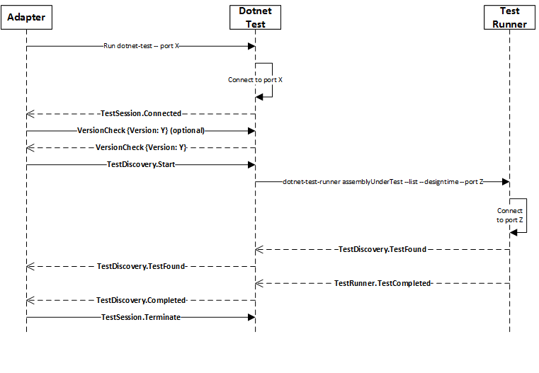

dotnet Core
Multiplatform dotnet !
Jonathan Muller / @bhaal22
What is .net Core?
- Cross Platform
- Open source
- Modular
Components
- Coreclr
- CoreFX
- dotnet cli
- roslyn
- asp.net core
Official Platforms Supported
- Windows
- Linux: Debian, Ubuntu, Mint, Red Hat, CentOS, openSuse
- MacOS
Lines of code by platform

Capabilities
- C# and F#
- Console App
- Asp.net Core
Why .net Core?
- *nix support !
- 2015 ! before to have an official multiplatform sdk for dotnet
Why .net Core?
Modular : Bring Your Own Library

Why .net Core?
Performance improvement
In June 2016: 2300% in regards of Aspnet 4.6

Noticed differences between
dotnet Framework and Core
- Xml API
- Introspection API
- HttpWebRequest API
dotnet cli
- Command Line interface to run / compile / package dotnet assemblies
dotnet cli
$ dotnet --help
.NET Command Line Tools (1.0.0-preview2-1-003155)
Usage: dotnet [host-options] [command] [arguments] [common-options]
Arguments:
[command] The command to execute
[arguments] Arguments to pass to the command
[host-options] Options specific to dotnet (host)
[common-options] Options common to all commands
Common options:
-v|--verbose Enable verbose output
-h|--help Show help
Host options (passed before the command):
-v|--verbose Enable verbose output
--version Display .NET CLI Version Number
--info Display .NET CLI Info
Common Commands:
new Initialize a basic .NET project
restore Restore dependencies specified in the .NET project
build Builds a .NET project
publish Publishes a .NET project for deployment (including the runtime)
run Compiles and immediately executes a .NET project
test Runs unit tests using the test runner specified in the project
pack Creates a NuGet package
dotnet cli
$ cd test-core
$ dotnet init
Created new C# project in dev/test-core
dotnet cli
$ cd test-core
$ ls
Program.cs project.json
dotnet cli
$ cat project.json
{
"version": "1.0.0-*",
"buildOptions": {
"debugType": "portable",
"emitEntryPoint": true
},
"dependencies": {},
"frameworks": {
"netcoreapp1.1": {
"dependencies": {
"Microsoft.NETCore.App": {
"type": "platform",
"version": "1.1.0"
}
},
"imports": "dnxcore50"
}
}
}
dotnet cli
$ dotnet build
Project test1 does not have a lock file. Please run "dotnet restore" to generate a new lock file.
Project test1 does not have a lock file. Please run "dotnet restore" to generate a new lock file.
$ dotnet restore
log : Restoring packages for /tmp/test1/project.json...
log : Writing lock file to disk. Path: /tmp/test1/project.lock.json
log : /tmp/test1/project.json
log : Restore completed in 744ms.
$ dotnet build
Project test1 (.NETCoreApp,Version=v1.1) will be compiled because expected outputs are missing
Compiling test1 for .NETCoreApp,Version=v1.1
Compilation succeeded.
0 Warning(s)
0 Error(s)
Time elapsed 00:00:00.8766378
$ dotnet run
Project test1 (.NETCoreApp,Version=v1.1) was previously compiled. Skipping compilation.
Hello World!
Unit testing with .net Core
- MsTest
- xUnit
Unit testing: Discovery Protocol
Hands on demo
- ASPnet.core REST API service
- Windows 10
- Windows Server 2016 in a docker container
- Linux (Debian)
- Raspberry Pi3
Q/A
Thank you !
- hostname-core
- coreclr
- corefx